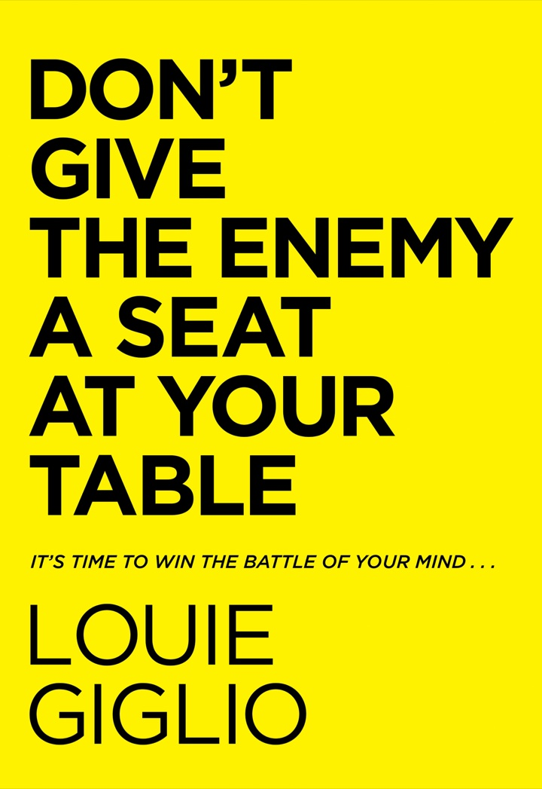

Louie Giglio reads Psalm 23 as a table God sets in the middle of your troubles. The enemies can stand around it. The Enemy doesn’t get a chair.
10 chapters1 psalm5 lies~45,000 words, condensed

1Don’t
2give
3the
4Enemy
5a
6seat
7at
8your
9table.
A friend’s whole reply to a long textNow the title
The big idea
You can’t stop him prowling. You can stop him sitting down.
A few years into planting Passion City Church in Atlanta, Giglio, then fifty, was in one of the hardest seasons of his ministry. He felt attacked, misrepresented and ready to quit. One evening, at the top of his driveway, he typed a long text to a friend about how events had finally proved him right. He wanted pages of support back. The reply was one sentence, nine words long, and it became this book’s title.
The friend’s point was that the fight wasn’t really with people. Fear, paranoia and the replayed arguments in his head were coming from somewhere, and it wasn’t his Shepherd. Giglio sets this beside 1 Peter 5:8, where the Devil prowls like a lion. You can’t stop the prowling, but you do decide who sits at your table.
The rest of the book reads Psalm 23 through that picture, verse 5 above all: God sets a table for you in the presence of your enemies. The trouble doesn’t go away, but the meal still happens, and it’s meant for two. Giglio says plainly that this is a book of worship, not a self-help plan, and he wrote it with Marcus Brotherton. Even so, it ends with very practical habits for the mind.
The book in numbers
9
Words in the text that gave the book its title.
2
Seats at the table as Giglio reads verse 5: you and the Good Shepherd.
5
Lies which, if you hear them, show the Enemy is already seated.
3
Moves for taking a thought captive: spot it, bind it, replace it.
7
Seeds of truth to plant in the garden of your mind.
How fast it happens
On Shelley’s birthday, at a dinner for two at a table for four, a young man recognised Giglio from a conference and came back to share what God had put on his heart. He asked whether he could sit down and was already pulling out a chair before anyone answered. Giglio’s point is how fast it happened. A third person can join the table in under a second.
The book runs as ten chapters. The three groups are mine.
The core picture
A meal for two, in the middle of the trouble
Giglio says that if he had written verse 5, he would have asked for a quiet table by the window. Instead, the psalm puts the table where the fighting is. Everything in the book depends on where people stand around that table.
Who sits, who stands, who is refused
At the table
You and the Good Shepherd. All who follow him are welcome, but each table is set for two: fellowship, not a crowd. The food is good, but the point is the company.
Around it
Critics, accusers and your real problems. God doesn’t take them away first. He feeds you while they watch. Chapter 9 explains why they get ringside seats.
Drawn for this page. The troubles in the ring are from Giglio’s description in chapter 2. The seating plan shows his distinction: enemies around the table are part of life, but the Enemy sitting at it is a choice.
Psalm 23, as the book walks it
From green pastures to a table in a war zone
Giglio asks readers to set aside the needlepoint-bookmark version of the psalm. Read line by line, it describes a shepherd who leads, corrects, defends and feeds, and the path he leads you on runs through a valley.
The route, verse by verse
v.1 · ch. 2The shepherd
Everyone is led by something: culture, the feed or themselves (2 Peter 2:19). Giglio rewrites the psalm for someone who shepherds themselves, and it ends with a cup overflowing with rage.
v.2 · ch. 2Green pastures
The shepherd makes you lie down. That means rest, and it means you stop trying to manage every outcome.
v.2 · ch. 2Still waters
A thirsty sheep will put its head into a torrent and get dragged under by about fifteen pounds of wet wool. The crook pulls you back from what looks good but would drown you.
v.3 · ch. 2Soul restored, right paths
The right paths are taken for his name’s sake, and they include hard ground.
v.4 · ch. 2, 4The darkest valley
This is where “even though … I will” faith comes from. You go through the valley, not just into it. The news is not only that God helps but that he is there with you.
v.4 · ch. 4Rod and staff
This is no pale Sunday-school portrait. The staff hooks you to safety, and the rod beats off the lion and the bear, as the young David did.
v.5 · ch. 1–3, 9A table among enemies
The centre of the book: a feast set in the chemo ward, in the divorce, in the job stress. The enemies watch, but they don’t sit down.
v.5 · ch. 4Oil on the head
Shepherds oiled sheep’s heads so flies and parasites couldn’t breed in their noses and wool. In the same way, God’s Word guards you against lies.
v.5 · ch. 4Overflowing cup
There is more than enough, and it is meant to be shared, even with people who dislike you. You can only give with open hands, not clenched fists.
v.6 · ch. 1Goodness and love follow
Where you end up is already settled, so the fear loses its grip.
The verse labels are my short versions. The readings are Giglio’s, condensed.
“You prepare a table before me in the presence of my enemies.”
Psalm 23:5, the verse the book keeps returning to
The “even though … I will” pattern
Habakkuk lists the failures (no figs, no grapes, no grain, no sheep) and still decides to rejoice. Giglio finds the same shape in the three young men at the furnace and in Paul and Silas singing in the stocks at midnight.
His friend Katherine Wolf had a massive brain stem stroke at 26, six months after giving birth. Surgeons removed more than half her cerebellum in an operation of over sixteen hours. She was unconscious for two months, took eighteen months to walk again, and had ten more surgeries. In 2009 she rewrote Habakkuk’s prayer around her own losses: the wheelchair, her paralysed face, a baby she couldn’t care for.
Giglio invites the reader to fill in the blank in the same way. Even though ___, I will.
Reading it for fear
Where fear sits at the table
Fear isn’t the subject of a single chapter. It runs through the whole book. Fear comes first in Giglio’s list of voices you don’t have to listen to. It drives the paranoia of his driveway text. It is behind the ten spies, the servant at Dothan and Peter by the fire.
His answer is never that the danger isn’t real. The valley is real and so are the enemies around the table. What changes is who is with you there. That’s why he suggests a different prayer in a storm: not only help me, but thank you for being in this with me.
“Even though I walk through the darkest valley, I will fear no evil.”
Psalm 23:4, as quoted in chapter 2
One limit worth knowing: this is a devotional book. It doesn’t discuss clinical anxiety, therapy or medication. Giglio also warns against blaming the Devil for everything. If your car won’t start, you need jumper cables, not an exorcism.
The book’s moves against fear
ch. 3
Don’t call it normal. Telling yourself that everyone is anxious and nothing can be done is the moment you hand over the chair.
ch. 2
Read all of verse 4. If you stay with the first half (the valley) and forget the second (he is with me), you end up camping in the dark.
ch. 4
Through, not to. The thought I won’t make it doesn’t come from the Shepherd. God parted the sea rather than bridging it, and the way out led through the water.
ch. 4
Surrounded is surrounded. At Dothan an army ringed Elisha’s town. When the servant’s eyes were opened, he saw that army ringed in turn by horses and chariots of fire.
ch. 4
Drop the fists.Everybody hates me usually means walls went up long ago. After a stranger told him God had his back, Giglio kept repeating that line to himself.
ch. 7
Check where the thought came from. The ten spies felt like grasshoppers and decided the Canaanites saw them that way too. Nobody had asked the Canaanites.
Chapters 1–3
The table
Where the phrase came from, what the psalm actually promises, and how quickly the table can be lost.
01Nine Words That Will Change Your Life
The text that became a weapon
The fight he thought he was having with people was really a fight over who got to speak inside his head.
The friend’s reply moved the struggle somewhere else: against powers, not people (Ephesians 6:12). Giglio realised his Shepherd wasn’t the one making him afraid.
The phrase kept landing with others. First a morning Bible study for the coaches of a struggling pro sports team, then his Passion staff around a real table of snacks, then a Sunday sermon with fruit, cheese and dessert passed down the rows. A mother in a bitter separation and a student with suicidal thoughts told him it was what they needed to hear.
“Don’t give the Enemy a seat at your table.”
The friend’s reply, all nine words
02The Twenty-Third Psalm—Remix
Life is hard, and the table is set anyway
The foundation is faith that grows under pressure instead of shrinking: even though this has happened, I will still trust.
The Good Shepherd of the psalm is the Jesus of John 10, who knows his sheep, protects them and lays down his life for them. Hebrews 13:8 links the two: he is the same yesterday, today and forever.
The table carries old meaning. There was the bread of the Presence in the tabernacle (Exodus 25:30) and the promised feast for all peoples (Isaiah 25:6). Giglio separates the table of salvation, open to everyone, from the table of fellowship in Psalm 23, which is set for you and him.
The real reward is not the food but the company: the King of the ages (1 Timothy 1:17), whose works Job called only the outer fringe.
03Mind If I Sit Down?
It takes a second to lose the table
The Enemy doesn’t arrive with a pitchfork. He arrives friendly and sympathetic, and helps himself to your brownie.
We hand him the chair whenever we treat worry, envy or a bit of lust as normal for modern life. Giglio insists none of it has to be accepted: the power that raised Jesus lives in believers.
He comes disguised as an angel of light (2 Corinthians 11:14), sympathising about your awful boss and even quoting Scripture, as he did to Jesus in the wilderness.
His tools are the cravings of the body, the cravings of the eyes and pride (1 John 2:16). His oldest move, with Eve, is to suggest God is holding something good back.
His goal never changes: to steal, kill and destroy (John 10:10). It is not your job to stop him prowling. It is your job to keep him from sitting down.
Chapters 4–5
The Enemy’s playbook
You don’t study the lies to dwell on them. You study them so you can recognise them quickly and look back at the Shepherd.
04Deadly Lies Exposed
Five lies that mean he’s already seated
If you hear any of these in your own head, there’s a third person at the table.
What you hear, and what Giglio answers
1 · ComparisonIt’s better at another table.
The grass-is-greener pitch
He calls the Devil the worst kind of salesman. His examples include a colleague’s new pool, a friend’s perfect posts and a gym friend who left his family for Sonoma. Only one table offers life to the full.
2 · DoomI’m not going to make it.
Through the valley
God doesn’t promise to lift you out of the trouble. He promises to bring you through it, and you’ll come out of it with something to tell. Jesus lives in you, so you are not without hope.
3 · WorthlessnessI’m not good enough.
Look across the table
Humility means thinking of yourself less, not thinking less of yourself. The host booked the table and made the meal, and it cost him his life.
4 · Me against the worldEverybody is against me.
God has your back
One man told Giglio that everyone at two jobs, and his whole in-law family, hated him. Usually the fists clenched long before anyone else did anything. God is for you, so everyone isn’t against you.
5 · No way outI’m surrounded.
Yes, and so are they
This one combines the others. Elisha prayed for his servant’s eyes to be opened, not for rescue, and the servant saw the hills full of fire.
Lies paraphrased from ch. 4; the card layout is mine
The chapter starts with the pale, faraway Jesus in a painting in Giglio’s seventh-grade Sunday school room. Psalm 23 instead shows a shepherd with a weapon in each hand.
05Spiral of Sin
How a thought becomes a loop
Sin shows you the lure and hides the hook. Afterwards, the voice that sold it to you prosecutes you for buying it.
Desire is the bait. James 1:13–15 traces temptation to your own desires: desire conceives sin, and sin ends in death. Giglio means spiritual death here, a broken closeness with God, not the loss of salvation.
A thought is not yet a sin. Jesus heard the Devil’s words and was not stained by them. Sin starts when you keep a thought and entertain it, which is why the Sermon on the Mount treats hatred and lust as heart-murder and heart-adultery. Giglio holds that a thought harboured long enough always comes out, either in action or in a softened attitude toward it.
The switch. Once you’ve given in, the enticer becomes the accuser. Condemnation is what officials do to a building just before the wrecking ball.
Rededicating the rededication. Giglio grew up with altar calls and campfire vows never to sin again. Promises made in your own strength wear out, and the end of that road is hiding. The way out is surrender, plus the promise that God provides a way out (1 Corinthians 10:13).
The spiral, and where it can be broken
A
Take it captiveSpot the lie, bind it in Jesus’ name, replace it with Scripture (ch. 7). This is the cheapest exit.
B
Use a Way Out doorGod provides a way out of every temptation. The doors get smaller the further you go (ch. 6).
C
Confess, and listen for convictionGrace removes guilt and shame alike (ch. 5, 8).
D
Surrender instead of rededicatingStop promising to try harder. Hand the problem over (ch. 5).
Illustrative layout. The stages and exits come from chapters 5 to 8, but Giglio doesn’t number them or draw them as a loop. He says each lap leaves you where you started, only worse.
Two voices after you fall
Condemnation
Conviction
Comes from
Guilt; a posture of hate
Grace; a posture of love
Does with sin
Hides it
Confesses it
Produces
Remorse: feeling bad about it
Repentance: turning around
Asks for
Another rededication
Full surrender
Leads to
The next failure
Real change
According to Giglio, the Enemy condemns and God convicts. If you feel a pull to change direction, that is God. If you feel you might as well quit, that is the other voice.
“Condemnation is a path to future failure. Conviction is a highway to real change.”
Louie Giglio, ch. 5
Chapters 6–10
Taking back the table
The second half of the book moves from defence to offence: who you are, how to deal with a single thought, what to do after you fail, and what to fill your mind with instead.
06Freedom Revolution
Stop flailing; stand in who you are
People caught in quicksand rarely sink out of sight. Grains jam together in what is called a force chain, and people die of exhaustion from fighting it. Fighting sin in your own strength works the same way.
The win is already in. Giglio piles up the images: in Christ and a new creation, clothed with him, hidden with him, seated with him (Ephesians 2:6). You win the battle because of who walks through the valley with you, not because the pressure lets up.
Sinner is no longer your identity. He rejects the sermon that says you are only ever a sinner saved by grace, and calls it bad identity theology. Preach Ephesians 2:8–9 and 2 Corinthians 5:17 together: saved by grace, and now new. He says Jeremiah 17:9 describes a heart that hasn’t yet been made new, while Ezekiel 36:26 promises a new one.
Saint is the New Testament word. He counts more than forty verses that use it for believers. When Paul called himself the worst of sinners, he was ranking how much he needed grace. It wasn’t his name for himself (Romans 6:1–2).
Way Out signs. Everywhere in the London Underground, down to the Jubilee line platforms at London Bridge, 23.2 metres below sea level, the signs look different but say the same thing: Way Out. 1 Corinthians 10:13 is God’s version of those signs.
The other door. The gospel is less a ban on sin than an offer to walk with God: the door marked Invitation. Like a newborn zebra kept apart until it knows its mother’s stripes (an example he credits to Priscilla Shirer), you learn the Shepherd’s voice by spending time alone with him.
The further you go, the smaller the door
Illustrative. Giglio’s example is a girls’ trip to Cancún that went badly last time. You can turn down the invitation. If your card is declined when you book, treat that as a Way Out sign. You can skip the club, or get out of the taxi on the way there. He describes the doors shrinking from a normal door to a pet door to a doll’s-house door, but the best way out is not to open the first door at all: filters, discretion and a few friends who know what you struggle with (Romans 13:14).
07Take Every Thought Captive
Spot it, bind it, replace it
Christ has won the war, but there are still battles to fight, and nobody else can take your thoughts captive for you.
A personal case. At eighteen, Giglio flunked out of two schools in one year. The Enemy’s foothold, he says, was laziness. Once he connected his call to ministry with the dull work of undergraduate classes, he begged his way back into Georgia State, did about two years’ work in a little over one, and graduated with his original class.
Seeds. The ten spies had no way of knowing how they looked to the Canaanites, but they felt like grasshoppers, and they wandered for forty years. Giglio lists the seeds to watch for, among them I’ll never change, I am my addiction and I deserve to be bitter.
D-Day Plus 1. On June 7, 1944, the outcome of the war was settled, but Cherbourg, Paris and the Bulge were still to come. The Greek nikos is victory by conquest. You fight from the beachhead, not toward it.
The hard part. He doesn’t soften it: leaving a thought unchallenged is your own failure, and you can’t pin it on your parents.
The prayer, worked as a routine
See the lieAsk where the thought came from and whether it matches what God says. If you think I’m pathetic, set it against Colossians 3:12, which calls you holy and dearly loved.
Bind itArrest it. Make a short prayer, aloud or silent, binding it in Jesus’ name, in the spirit of Jude 9. Even Jesus in Gethsemane yielded his will to the Father.
Replace itMemorise Scripture so you can play it back to yourself. Jesus answered the tempter by quoting Scripture. Become the DJ of your own thoughts.
Play offenceGo through the eight categories of Philippians 4:8 (true, noble, right and so on), or take one promise for each day of the week.
Giglio used this while writing the chapter. He started to think the book would help no one, prayed against the thought, and then a verse from that morning’s reading came back to him: Joshua 1:5, the promise to be with him as with Moses.
“We take captive every thought to make it obedient to Christ.”
2 Corinthians 10:5, the basis of the prayer
08Grace That Silences Shame
From failure to family
If he does get a seat, God isn’t finished with you. Confession removes him from the table, and grace deals with what he leaves behind.
Guilt
I did something wrong.
A legal, spiritual state: you’re accountable
Isaiah, before the holy throne, felt shattered
Answer: confession. A coal from the altar took his guilt away. On the cross, Jesus took ours
Shame
I am something wrong.
An emotional state that fuses sin with identity
Makes you hide, behind fig leaves, walls or busyness
Answer: grace gives you a new definition. You were a failure; now you are family (1 John 3:1)
Confession under 1 John 1:9 doesn’t send Jesus back to the cross. You confess the sin and you also confess that you are already forgiven. The Enemy, by contrast, wants to send you on a long guilt trip.
Hester Prynne’s scarlet A is the picture of a life defined by one act, and sometimes by other people’s sins. The Enemy points to your scars as your identity; Jesus offers his scars instead.
Peter denied Jesus three times and went back to fishing. Jesus didn’t confront him. He cooked breakfast on the beach, asked three times whether Peter loved him, and gave him work: feed my sheep. Soon after, Peter preached and three thousand people were saved. There were consequences, but Jesus focused on restoring him.
Those who look to God are radiant (Psalm 34:5). Forgiving yourself, Giglio says, isn’t letting yourself off the hook. It is agreeing with Jesus, who already has.
09Staggered by the Mountain
Why the enemies get ringside seats
The strongest defence is to be so taken up with the host that the empty chair stops mattering.
Knowing about vs. knowing. Giglio and Shelley have known London since 1988, from many visits, not from guidebooks. On a trip with his fast-moving father-in-law they spent 27 minutes at the Butchart Gardens, eight of them buying ice cream, and filmed it to watch at home. Lingering is the point.
Mount Rainier. On a six-week college road trip, Giglio had aced a geography test about the mountain. When he stood in front of it he broke down in tears. That night, in a tent in Coos Bay, he understood it as the difference between information and revelation.
Holy, holy, holy. In Isaiah 6 the seraphim cry out God’s holiness, not his strength or faithfulness. Holy (qadash) means sacred and set apart: God isn’t even in a race with anyone else. Glory (kabod) means weight and worth. Hebrew doubles a word for emphasis and only rarely triples it.
So why put the table among the enemies?
1
So you learn there is always enoughHe sustains you in every struggle, in front of everyone.
2
So they watch you shineFaces that look to him are radiant. In time the onlookers turn to the one who keeps you glowing. Giglio mentions the twenty-one Christians killed on a Libyan beach.
3
So they hear your songWorship becomes your weapon: I look surrounded, but I’m surrounded by you.
Giglio calls this question the crux of the book. The three answers are his. The numbering is mine.
10The Garden of Your Mind
Plant seven seeds
Seeds blow into the garden uninvited. You decide which ones get water.
The Giglios’ goldendoodle, London, knows the drainage pipe at the dog park is off limits, and on some days you can see her watching for the moment they look away. Giglio asks whether you’ve ever been stuck on one idea like that.
Romans 8:6 in the NASB speaks of a mind set on the Spirit, which he takes to mean a new mindset. You win by thinking less about the evil you’re avoiding and more about the God you’re turning toward.
He brings the images together. The garden is your mind, the table is fellowship, and the mountain is God’s greatness. All three describe a relationship.
The seven seeds, with the verse to memorise
01 · Jeremiah 29:11I am in God’s storyIt’s bigger than you and not about you, but you have a seat in it.
02 · Psalm 139:13–14I am fearfully and wonderfully madeYou were made on purpose: not accidental, not incidental.
03 · Ephesians 2:10My life has purposeCreated things have a reason. You are not expendable.
04 · 2 Corinthians 5:17The cross has the final wordForgiven, made right, new. Your guilt is gone.
05 · 1 Peter 2:9I serve at the pleasure of the KingYour job is a posting. You are sent out as light so others can see Jesus.
06 · Philippians 2:9–11Jesus is Lord, and my LordStronger and higher than anything, with a kingdom that lasts.
07 · Romans 8:28My God turns evil into goodNo disease, divorce or desert can stop these seeds from growing.
Giglio suggests taking one seed a day for a week, or one a week for seven weeks. Personalise each statement and learn its verse by heart.
Practical takeaways
The toolkit
Giglio says this isn’t a three-steps-to-a-pain-free-life book. Still, these are the habits it keeps coming back to.
Spot him
Listen for the five liesAnother table is better; I won’t make it; I’m not enough; everyone’s against me; there’s no way out.
Ask where a thought came fromIf it doesn’t sound like the Shepherd of Psalm 23, it isn’t from him.
Watch your low momentsBeing lonely, angry, tired, hungry or afraid is when the chair scrapes across the floor. That’s how it went for Peter by the fire.
Un-seat him
Bind the thought, by nameArrest it in Jesus’ name, out loud if that helps, before it settles in.
Take the earliest doorSafeguards first. If you’re already through, take the next Way Out, however small.
Choose conviction over condemnationConfess the sin and the forgiveness. Then surrender; don’t rededicate.
Fill the table
Memorise one verse at a timeUse index cards on the exercise bike, an audio Bible on your commute, or one less TV show.
Pray “with me”, not just “help me”Thank him for being in the storm with you, then ask how you’ll get through it together.
LingerGive God more than 27 minutes at the gardens. Climb higher on the mountain. Plant the seven seeds.